Anglais professionnel : Coiffure
CAP Métiers de la coiffure. Seize mots anglais du métier, outils, objets et gestes de tous les jours. Ressource en libre accès.
Quatre étapes : du français à l'anglais, écouter et choisir, associer, compléter une phrase au travail. Le bouton « Écouter » lit le mot en anglais britannique.
Liste de vocabulaire
| Image | Français | English | Audio |
|---|---|---|---|
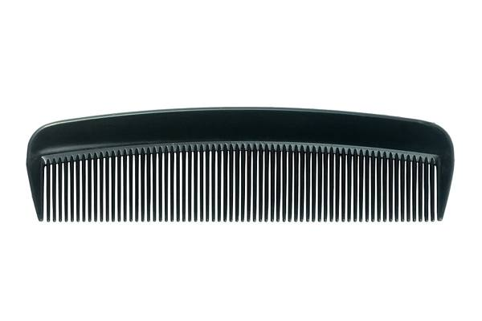 | le peigne | comb | |
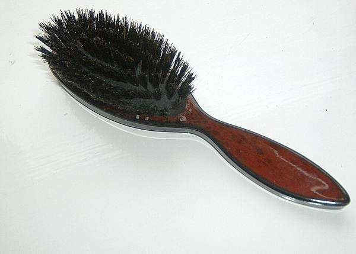 | la brosse à cheveux | hairbrush | |
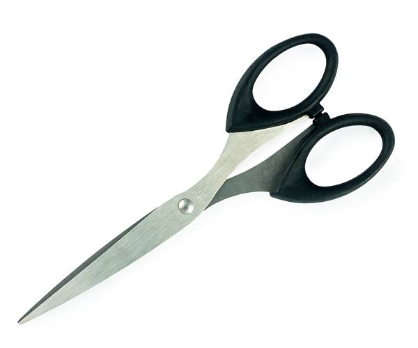 | les ciseaux | scissors | |
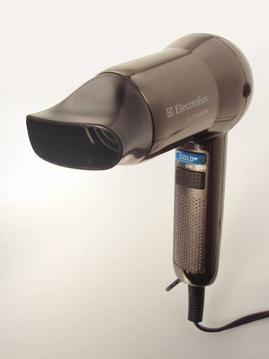 | le sèche-cheveux | hairdryer | |
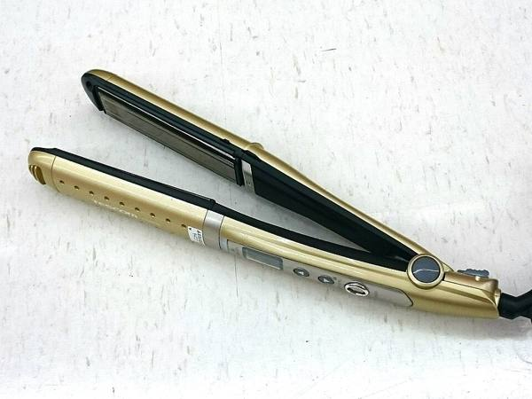 | le lisseur | straighteners | |
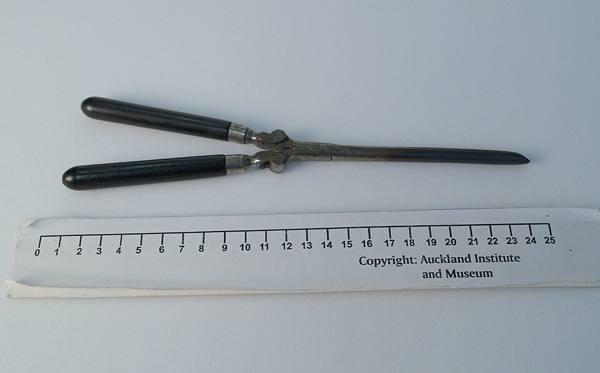 | le fer à friser | curling tongs | |
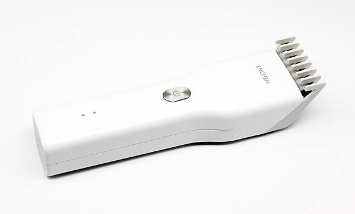 | la tondeuse | clippers | |
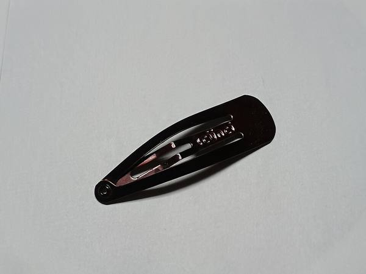 | la pince à cheveux | hair clip | |
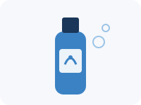 | le shampooing | shampoo | |
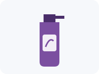 | l'après-shampooing | conditioner | |
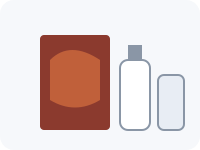 | la coloration | hair dye | |
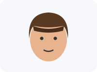 | la frange | fringe | |
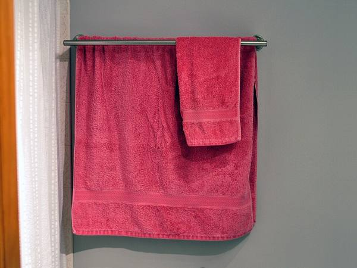 | la serviette | towel | |
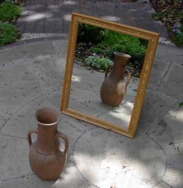 | le miroir | mirror | |
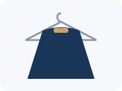 | la cape de coupe | cutting cape | |
| le rendez-vous | appointment |
Corrigé pour le professeur : phrases au travail
- Would you like to book an ________? (appointment)
- Cut the hair with the ________. (scissors)
- Dry the hair with the ________. (hairdryer)
- Look in the ________: do you like it? (mirror)
- I would like a short ________, please. (fringe)
- Hold the hair with a ________. (hair clip)
Dans les étapes 1, 2 et 3, la bonne réponse correspond à la ligne de la liste de vocabulaire.
Crédits des images
Photos sous licence libre, issues de Wikimedia Commons, redimensionnées pour le téléphone. Dessins originaux pour les gestes et les notions.
- le peigne (comb) : photo de Crisco 1492, licence CC BY-SA 4.0, page du fichier sur Wikimedia Commons.
- la brosse à cheveux (hairbrush) : photo de Musical Linguist, licence CC BY-SA 3.0, page du fichier sur Wikimedia Commons.
- les ciseaux (scissors) : photo de Crisco 1492, licence CC BY-SA 4.0, page du fichier sur Wikimedia Commons.
- le sèche-cheveux (hairdryer) : photo de Batholith, licence Public domain, page du fichier sur Wikimedia Commons.
- le lisseur (straighteners) : photo de Lombroso, licence CC BY-SA 4.0, page du fichier sur Wikimedia Commons.
- le fer à friser (curling tongs) : photo de Auckland War Memorial Museum (téléversé par Fæ), licence CC BY 4.0, page du fichier sur Wikimedia Commons.
- la tondeuse (clippers) : photo de Jacek Halicki, licence CC BY-SA 4.0, page du fichier sur Wikimedia Commons.
- la pince à cheveux (hair clip) : photo de Sinistersweet, licence CC0, page du fichier sur Wikimedia Commons.
- le shampooing (shampoo) : dessin original, Itinéraires et destinations, CC BY-NC-SA 4.0.
- l'après-shampooing (conditioner) : dessin original, Itinéraires et destinations, CC BY-NC-SA 4.0.
- la coloration (hair dye) : dessin original, Itinéraires et destinations, CC BY-NC-SA 4.0.
- la frange (fringe) : dessin original, Itinéraires et destinations, CC BY-NC-SA 4.0.
- la serviette (towel) : photo de Jessica F., licence CC BY 2.5, page du fichier sur Wikimedia Commons.
- le miroir (mirror) : photo de Cgs, licence CC BY-SA 3.0, page du fichier sur Wikimedia Commons.
- la cape de coupe (cutting cape) : dessin original, Itinéraires et destinations, CC BY-NC-SA 4.0.
- le rendez-vous (appointment) : dessin original, Itinéraires et destinations, CC BY-NC-SA 4.0.
Fiche de vocabulaire à imprimer
Gros caractères (16 points minimum), en trois formats :